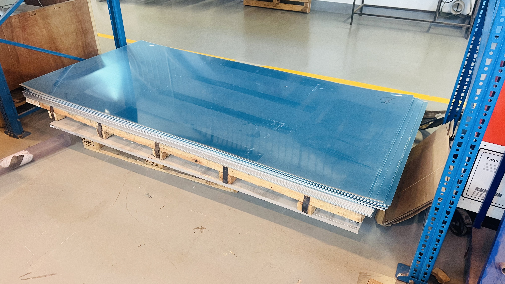
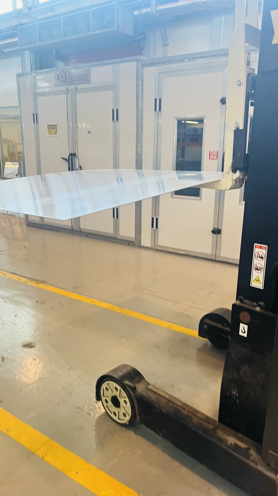
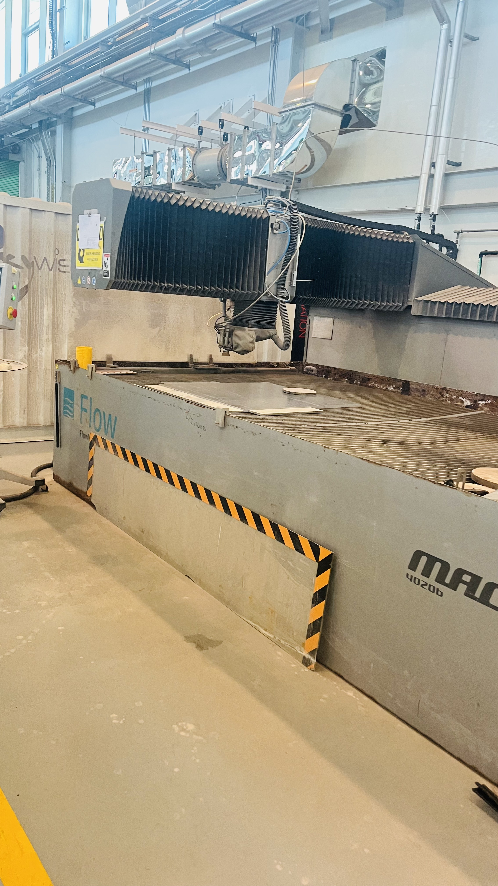
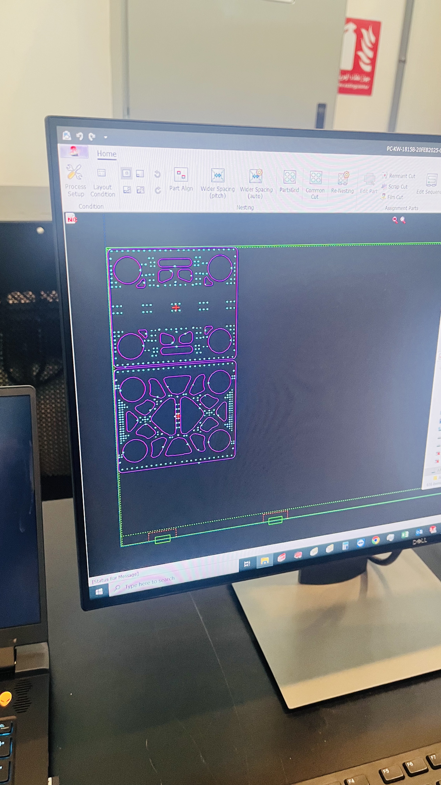
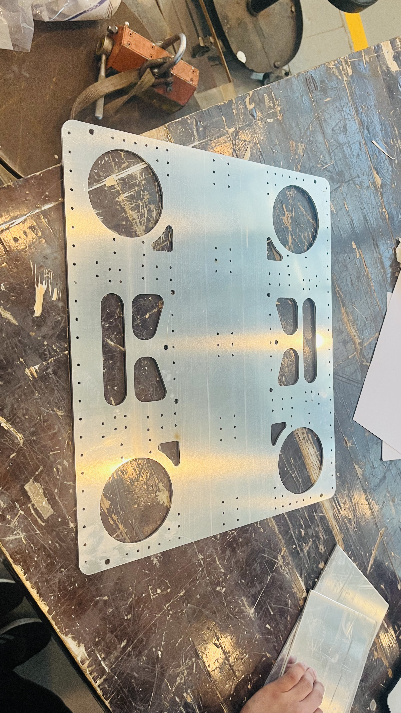
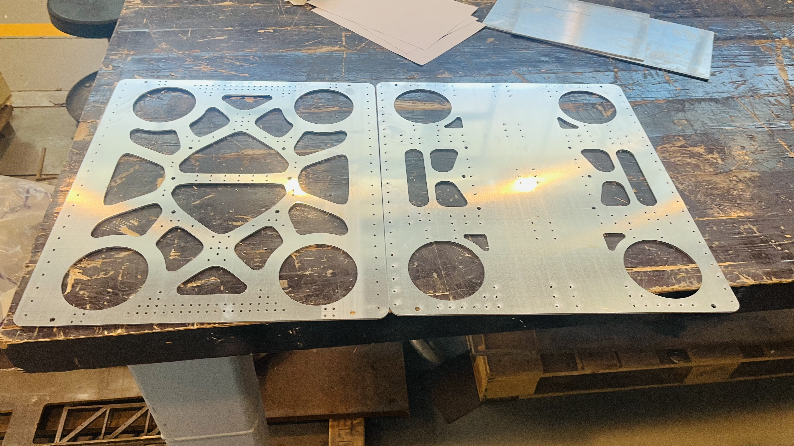

With great success from our last session, we decided it was time to cut our final pieces. We liaised with the PCL inventory to acquire a full new sheet of aluminum for our purposes, and travelled to the HFL to set up the machinery for our purposes. After exporting the aluminum flat patterns as DXF files, and transferring them to the machinery, we were ready to cut. It was during the cutting we realized a mistake on our part. Whilst cutting out the voronoi pattern on the aluminum, the cut pieces didn’t fall through, which sometimes hindered the machine, hence we had to manually stop the machine and remove those pieces every time before continuing. However this was easy as the laser cutter had an extremely high precision and the aluminum was locked in place. Once we were done, we removed the pieces and began to sand it for safety purposes, however we had to stop due to time restrictions. Our plan moving forward would be to come in next week on a Monday to sand/finish the aluminum, bend it to our specifications and use the waterjet if we have enough time.
Metal Laser Cutter Final Pieces





